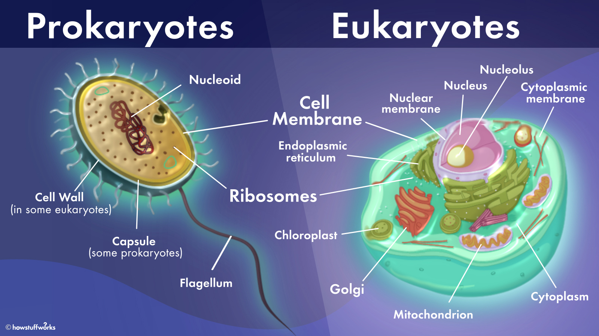

- There are two types of cells inliving organisms: prokaryotic and eukaryotic.
- Organisms of the domains Bacteria and Archaea are made out of prokaryotic cells.
- Organisms of the domains Protista, Fungi, Plantae and Animalia are made out of eukaryotic cells.
- All cells have in common the cell membrane, the cytosol, the chromosomes (which contain most of the cell's DNA) and the ribosomes.
- In eukaryotic cells, DNA is found in an organelle called nucleus, its content being separated from the cytosol by a double membrane. In prokaryotic cells, DNA is concentrated in a region called the nucleoid which is not bound by a membrane.
- In prokaryotic cells, most organelles are absent (although ribosomes are present), while eukaryotes possess many such membrane-bounded structures.
- Eukaryotic cells are generally much larger than prokaryotic cells.
- Important: prokaryotic organisms are always unicellular, while eucaryotic organisms can be both unicellular and pluricellular/multicellular.

Written by Bianca Buzas